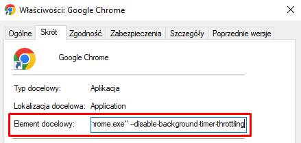

Jeżeli napotkałeś problem z zatrzymywaniem się procesu pobierania podczas gdy zakładka z EKW i uruchomionym
pobieraniem nie jest aktualnie otwarta to postępuj wg. poniższych kroków (tylko dla przeglądarki Chrome):
-
Wyłącz przeglądarkę Chrome. Pamiętaj aby pozbyć się również procesu działającego w tle jeżeli Chrome jest skonfigurowany
do kontynuuowania działania po zamknięciu (włączone ustawienie w opcjach systemowych: chrome://settings/system)
-
Odnajdź skrót do Chrome na pulpicie, kliknij na niego prawym przyciskiem myszy a następnie wejdź we "Właściwości"
-
W polu "Element docelowy" dopisz na końcu:
--disable-background-timer-throttling,
czyli całość w systemie Windows powinna mieć wartość:
"C:\Program Files\Google\Chrome\Application\chrome.exe" --disable-background-timer-throttling

- Następnie potwierdź zmianę przyciskiem "OK"
- Uruchom przeglądarkę i używaj wtyczki - od teraz pobieranie powinno działać nawet jeżeli zakładka nie jest aktualnie "na wierzchu" :)